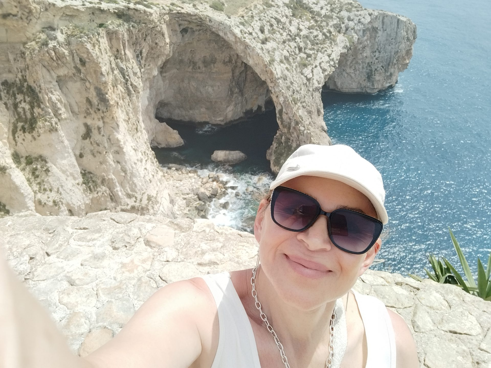

Welkom bij Iris
Jouw liefde.
Mijn thuis.
Ons verhaal.
Muziek die raakt, verhalen die blijven.
Van hart tot hart.

Dit ben ik.
Sommige eerste nummers vertellen een verhaal. Andere stellen een vraag. "Dit ben ik" doet iets anders: het stelt zich voor.
Deze single is een muzikale kennismaking met IRIS. Geen masker, geen rol, een eerlijke blik op wie ik ben en wat mij inspireert. Een nummer over jezelf durven zijn, ook wanneer het leven je uitdaagt om je te verstoppen.
Elke volgende compositie zal een nieuw hoofdstuk vertellen, maar hier begint alles.
Welkom in mijn wereld. Welkom bij IRIS.
Al mijn nummers

De magie van klank, de essentie van het moment.
IRIS is een creatief muziekproject waarin verhalen, emotie en moderne technologie samenkomen. Achter IRIS staat Iris Duym, een verhalenverteller die thema's als liefde en zelfontdekking vertaalt naar unieke composities.
"Muziek componeren is de kortste weg van mijn beleving naar jouw hart."
Waar verhalen beginnen
Ontvang mijn verhalen
Schrijf je in voor de nieuwsbrief en ontvang als eerste updates over nieuwe composities en verhalen.